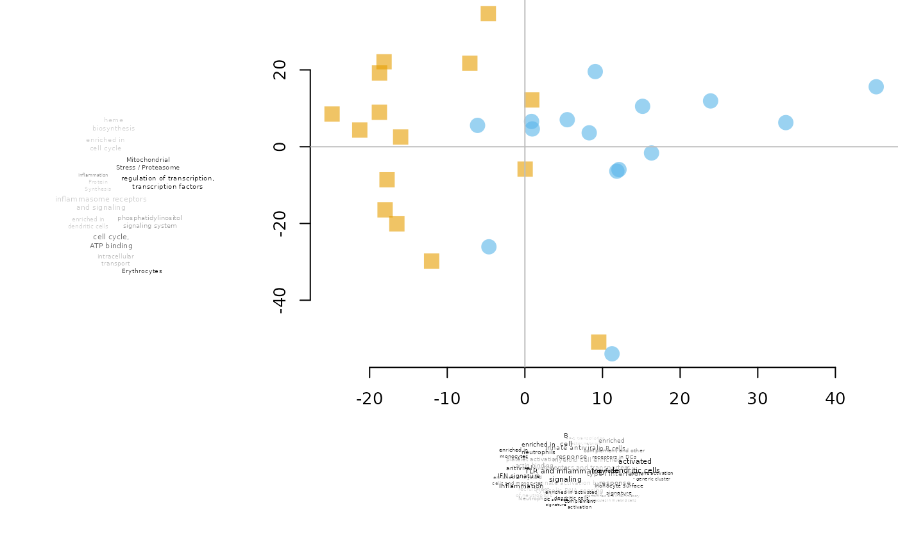

PCA plot annotated with tmod
tmodPCA.RdGenerate a PCA plot on which each dimension is annotated by a tag cloud based on tmod enrichment test.
tmodPCA( pca, loadings = NULL, genes, tmodfunc = "tmodCERNOtest", plotfunc = pcaplot, mode = "simple", components = c(1, 2), plot.params = NULL, filter = TRUE, simplify = TRUE, legend = FALSE, maxn = NULL, plot = TRUE, ... )
Arguments
| pca | Object returned by prcomp or a matrix of PCA coordinates. In the latter case, a loading matrix must be provided separately. |
|---|---|
| loadings | A matrix with loadings |
| genes | A character vector with gene identifiers |
| tmodfunc | Name of the tmod enrichment test function to use. Either |
| plotfunc | Function for plotting the PCA plot. See Details |
| mode | Type of the plot to generate; see Details. tmodCERNOtest or tmodUtest (tmodHGtest is not suitable) |
| components | integer vector of length two: components which components to show on the plot. Must be smaller than the number of columns in pca. |
| plot.params | A list of parameters to be passed to the plotting function. See Details |
| filter | Whether "uninteresting" modules (with no annotation) should be removed from the tag cloud |
| simplify | Whether the names of the modules should be simplified |
| legend | whether a legend should be shown |
| maxn | Maximum number of gene set enrichment terms shown on the plot (if NULL – default – all terms will be shown) |
| plot | if FALSE, no plot will be shown, but the enrichments will be calculated and returned invisibly |
| ... | Any further parameters passed to the tmod test function |
Value
A list containing the calculated enrichments as well as the return value from the plotting function
Details
There are three types of plots that can be generated (parameter "mode"): simple, leftbottom and cross. In the "simple" mode, two enrichments are run, on on each component, sorted by absolute loadings of the PCA components. Both "leftbottom" and "cross" run two enrichment analyses on each component, one on the loadings sorted from lowest to largest, and one on the loadings sorted from largetst to lowest. Thus, two tag clouds are displayed per component. In the "leftbottom" mode, the tag clouds are displayed to the left and below the PCA plot. In the "cross" mode, the tag clouds are displayed on each of the four sides of the plot.
By default, the plotting function is pca2d from the pca3d package. Any additional parametrs for pca2d can be passed on using the plot.params parameter. You can define your own function instead of pca2d, however, mind that in any case, there will be two parameters passed to it on the first two positions: pca and components, named "pca" and "components" respectively.
Examples
data(Egambia) E <- as.matrix(Egambia[,-c(1:3)]) pca <- prcomp(t(E), scale.=TRUE) group <- rep(c("CTRL", "TB"), each=15) tmodPCA(pca, genes=Egambia$GENE_SYMBOL, components=4:3, plot.params=list(group=group))